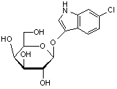

| Product Name | 6-Chloro-3-indolyl-ß-D-galactopyranoside |
| Synonyms |
6-Chloro-3-indolyl--D-galactopyranoside;Red-Gal(or) 6-Chloro-3-indolyl- D-galactoside;ChloroindolylDgalactopyranoside;Salmon Galactoside; 6-chloro-1H-indol-1-yl beta-D-galactopyranoside;6-chloro-1H-indol-3-yl β-D-galactopyranoside, Salmon Gal ,Rose gal, 6-Chloro-3-(b-D-galactopyranosyloxy)indole |
| Molecular Formula | C14H16ClNO6 |
| Molecular Weight | 329.7 |
| CAS Registry Number | 138182-21-5 |
| Molecular Structure |  |
| Appearance | Off-white to pale pink powder |
| Purity (By HPLC) | Min 99%+ |
| Specific optical rotation | -40.0 to -50.0° [α]D.20 (c=1, MeOH) |
| Solubility | Soluble in 5% (w/v) Methanol,Colorless to slightly yellowish, clear |
| Water content (BY KF) | Max 1% |
| Identity (IR): | Conforms to structure |
| Storage | Shipped at Ambient Temperature. Store at +2 - 8°C. |
| Description |
Salmon Gal (6-Chloro-3-indolyl-β-D-galactopyranoside) is used with IPTG as an alternative chromogenic substrate capable of detecting LacZ gene encoded ß-galactosidase activity for colony screening in colometric assays.Unlike colony blue/white screening through X-Gal, nonrecombination results in a salmon color after salmon gal is cleaved by ß-galactosidase through hydrolysis.This contrast may be useful in comparative or secondary screenings. |
| For Research Use Only | Not Intended for Diagnostic or Therapeutic Use. |
| Safety and Reference Information | PubChem CID: 65181 Merck Index : 14: 10074 |